Abelisaurus
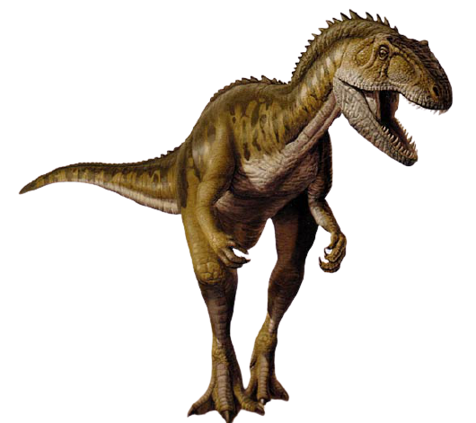Name: Abelisaurus (Greek for "Abel's lizard"); pronounced AY-bell-ih-SORE-us
Habitat: Woodlands of South America
Dinosaur Facts: Late Cretaceous (85-80 million years ago)
Size and Weight: About 30 feet long and 2 tons
Diet: Meat
Distinguishing Characteristics: Large head with small teeth; openings in skull above jaws
Abrictosaurus
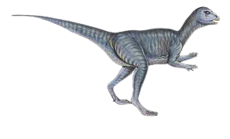Name: Abrictosaurus (Greek for "waking lizard"); pronounced AH-brick-toe-SORE-us
Habitat: Woodlands of southern Africa
Dinosaur Facts: Early Jurassic (200 million years ago)
Size and Weight: About four feet long and 100 pounds
Diet: Plants
Distinguishing Characteristics: Small size; a combination of beak and teeth
Abrosaurus
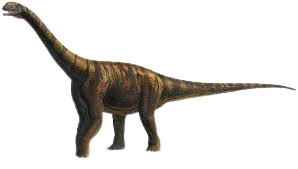Name: Abrosaurus (Greek for "delicate lizard"); pronounced AB-roe-SORE-us
Habitat: Woodlands of Asia
Dinosaur Facts: Middle Jurassic (165-160 million years ago)
Size and Weight: About 30 feet long and five tons
Diet: Plants
Distinguishing Characteristics: Moderate size; short, boxy skull
Bactrosaurus
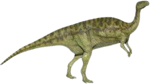Name: Bactrosaurus (Greek for "staff lizard"); pronounced BACK-tro-SORE-us
Habitat: Woodlands of Asia
Dinosaur Facts: Late Cretaceous (95-85 million years ago)
Size and Weight: About 20 feet long and two tons
Diet: Plants
Distinguishing Characteristics: Thick trunk; club-shaped spines on the backbone
Bambiraptor
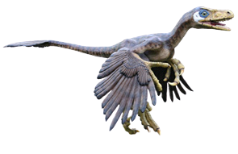Name: Bambiraptor (Greek for "Bambi thief," after the Disney cartoon character); pronounced BAM-bee-rap-tore
Habitat: Plains of western North America
Dinosaur Facts: Late Cretaceous (75 million years ago)
Size and Weight: About four feet long and 10 pounds
Diet: Meat
Distinguishing Characteristics: Small size, bipedal posture, feathers, relatively large brain, single, curved claws on hind feet
Barosaurus

Name: Barosaurus (Greek for "heavy lizard"); pronounced BAH-roe-SORE-us
Habitat: Plains of North America
Dinosaur Facts: Late Jurassic (155-145 million years ago)
Size and Weight: About 80 feet long and 20 tons
Diet: Plants
Distinguishing Characteristics: Extremely long neck and tail, tiny head, relatively slender build
Camarasaurus

Name: Camarasaurus (Greek for "chambered lizard"); pronounced cam-AH-rah-SORE-us
Habitat: Plains of North America
Dinosaur Facts: Late Jurassic (150-145 million years ago)
Size and Weight: About 60 feet long and 20 tons
Diet: Plants
Distinguishing Characteristics: Large, boxy skull, hollow vertebrae, single claw on front feet
Cerasinops

Name: Cerasinops (Greek for "lesser horned face"); pronounced SEH-rah-SIGH-nops
Habitat: Woodlands of North America
Dinosaur Facts: Late Cretaceous (85 million years ago)
Size and Weight: About eight feet long and 400 pounds
Diet: Plants
Distinguishing Characteristics: Relatively small size; blunt head with horned beak
Chaoyangsaurus

Name: Chaoyangsaurus (Greek for "Chaoyang lizard"); pronounced CHOW-yang-SORE-us
Habitat: Woodlands of Asia
Dinosaur Facts: Middle-Late Jurassic (170-145 million years ago)
Size and Weight: About three feet long and 20-30 pounds
Diet: Plants
Distinguishing Characteristics: Small size, bipedal posture, horned snout
Diabloceratops
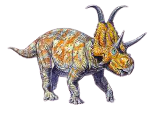Name: Diabloceratops (Greek for "devil horned face"); pronounced dee-AB-low-SEH-rah-tops
Habitat: Woodlands of North America
Dinosaur Facts: Late Cretaceous (85 million years ago)
Size and Weight: About 20-25 feet long and 1-2 tons
Diet: Plants
Distinguishing Characteristics: No horn on snout, medium-sized frill with two long horns on top
Dicraeosaurus

Name: Dicraeosaurus (Greek for "double-forked lizard"); pronounced DIE-cray-oh-SORE-us
Habitat: Woodlands of central Africa
Dinosaur Facts: Late Jurassic (150 million years ago)
Size and Weight: About 40 feet long and 10 tons
Diet: Plants
Distinguishing Characteristics: Moderate size, short, spiny neck
Echinodon

Name: Echinodon (Greek for "hedgehog tooth"); pronounced eh-KIN-oh-don
Habitat: Woodlands of western Europe
Dinosaur Facts: Early Cretaceous (140 million years ago)
Size and Weight: About two feet long and 5-10 pounds
Diet: Plants
Distinguishing Characteristics: Small size, paired canine teeth
Elrhazosaurus

Name: Elrhazosaurus (Greek for "Elrhaz lizard"); pronounced ell-RAZZ-oh-SORE-us
Habitat: Woodlands of Africa
Dinosaur Facts: Early Cretaceous (130-125 million years ago)
Size and Weight: About four feet long and 20-25 pounds
Diet: Plants
Distinguishing Characteristics: Small size, bipedal posture
Fabrosaurus
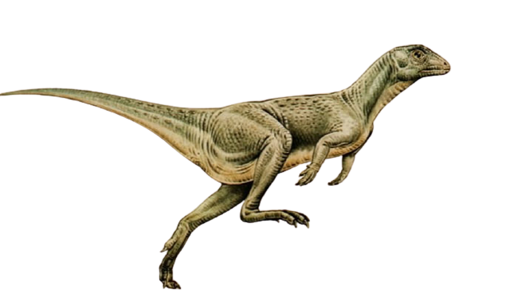Name: Fabrosaurus (Greek for "Fabre's lizard"); pronounced FAB-roe-SORE-us
Habitat: Woodlands of Africa
Dinosaur Facts: Early Jurassic (200-190 million years ago)
Size and Weight: About three feet long and 10-20 pounds
Diet: Plants
Distinguishing Characteristics: Small size, bipedal posture
Gallimimus
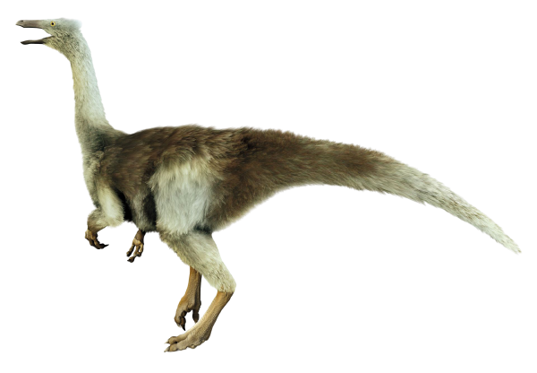Name: Gallimimus (Greek for "chicken mimic"); pronounced GAL-ih-MIME-us
Habitat: Plains of Asia
Dinosaur Facts: Late Cretaceous (75-65 million years ago)
Size and Weight: About 20 feet long and 500 pounds
Diet: Unknown, possibly meat, plants and insects and even plankton
Distinguishing Characteristics: Long tail and legs, slender neck, wide-set eyes, small, narrow beak
Hadrosaurus

Name: Hadrosaurus (Greek for "sturdy lizard"); pronounced HAY-dro-SORE-us
Habitat: Woodlands of North America
Dinosaur Facts: Late Cretaceous (80-75 million years ago)
Size and Weight: About 30 feet long and 3-4 tons
Diet: Plants
Distinguishing Characteristics: Large size, broad, flat beak, occasional bipedal posture
Incisivosaurus

Name: Incisivosaurus (Greek for "incisor lizard"); pronounced in-SIZE-ih-voh-SORE-us
Habitat: Woodlands of Asia
Dinosaur Facts: Early Cretaceous (130-125 million years ago)
Size and Weight: About three feet long and 5-10 pounds
Diet: Plants
Distinguishing Characteristics: Long legs, clawed hands, prominent teeth
Jainosaurus

Name: Jainosaurus (after Indian paleontologist Sohan Lal Jain); pronounced JANE-oh-SORE-us
Habitat: Woodlands of Central Asia
Dinosaur Facts: Late Cretaceous (70-65 million years ago)
Size and Weight: About 50 feet long and 15-20 tons
Diet: Plants
Distinguishing Characteristics: Long neck and tail, light body armor
Kaatedocus

Name: Kaatedocus (Native American/Greek for "small beam"); pronounced COT-eh-DOE-kuss
Habitat: Plains of North America
Dinosaur Facts: Late Jurassic (150 million years ago)
Size and Weight: About 50 feet long and 10 tons
Diet: Plants
Distinguishing Characteristics: Long neck, flat muzzle studded with numerous teeth
Latirhinus

Name: Latirhinus (Greek for "broad nose"); pronounced LA-tih-RYE-nuss
Habitat: Woodlands of North America
Dinosaur Facts: Late Cretaceous (75-70 million years ago)
Size and Weight: About 15 feet long and 1-2 tons
Diet: Plants
Distinguishing Characteristics: Large, broad, flat nose
Magnapaulia
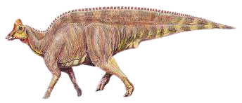Name: Magnapaulia (Latin for "big Paul," after Paul G. Hagga, Jr.); pronounced MAG-nah-PAUL-ee-ah
Habitat: Woodlands of western North America
Dinosaur Facts: Late Cretaceous (75 million years ago)
Size and Weight: About 40 feet long and 10 tons
Diet: Plants
Distinguishing Characteristics: Large size, bulky tail with neural spines
Nankangia
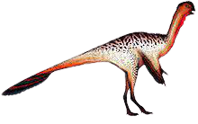Name: Nankangia (after Nankang Province in China); pronounced non-KAHN-gee-ah
Habitat: Woodlands of eastern Asia
Dinosaur Facts: Late Cretaceous (70-65 million years ago)
Size and Weight: About three feet long and 5-10 pounds
Diet: Unknown, possibly omnivorous
Distinguishing Characteristics: Small size, prominent beak; feathers
Omeisaurus

Name: Omeisaurus (Greek for "Omei Mountain lizard"); pronounced OH-may-SORE-us
Habitat: Woodlands of Eastern Asia
Dinosaur Facts: Late Jurassic (165-160 million years ago)
Size and Weight: About 50 feet long and 5-10 tons
Diet: Plants
Distinguishing Characteristics: Large size, extremely long neck
Panamericansaurus

Name: Panamericansaurus (after the Pan American Energy Co.); pronounced PAN-ah-MEH-rih-can-SORE-us
Habitat: Woodlands of South America
Dinosaur Facts: Late Cretaceous (75-65 million years ago)
Size and Weight: About 30 feet long and five tons
Diet: Plants
Distinguishing Characteristics: Relatively small size; long neck and tail
Quaesitosaurus
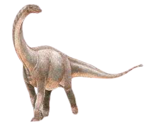Name: Quaesitosaurus (Greek for "extraordinary lizard"); pronounced KWAY-sit-oh-SORE-us
Habitat: Woodlands of Central Asia
Dinosaur Facts: Late Cretaceous (85-70 million years ago)
Size and Weight: About 75 feet long and 50-60 tons
Diet: Plants
Distinguishing Characteristics: Small head with large ear openings
Rapetosaurus
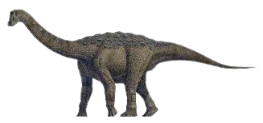Name: Rapetosaurus (Malagasy and Greek for "mischievous lizard"); pronounced rah-PETE-oh-SORE-us
Habitat: Woodlands of Madagascar
Dinosaur Facts: Late Cretaceous (70-65 million years ago)
Size and Weight: About 50 feet long and 20-30 tons
Diet: Plants
Distinguishing Characteristics: Long neck and tail, small, blunt teeth
Saltasaurus
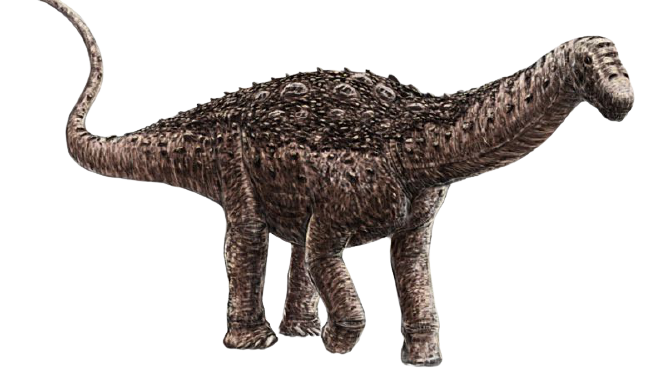Name: Saltasaurus (Greek for "Salta lizard"); pronounced SALT-ah-SORE-us
Habitat: Woodlands of South America
Dinosaur Facts: Late Cretaceous (80-65 million years ago)
Size and Weight: About 40 feet long and 10 tons
Diet: Plants
Distinguishing Characteristics: Relatively slim build; quadrupedal posture; short neck and legs; bony plates lining back
Tanius

Name: Tanius ("of Tan"); pronounced TAN-ee-us
Habitat: Woodlands of Eastern Asia
Dinosaur Facts: Late Cretaceous (80-65 million years ago)
Size and Weight: About 30 feet long and 2-3 tons
Diet: Plants
Distinguishing Characteristics: Long, stiff tail, longer hind than front legs
Uteodon

Name: Uteodon (Greek for "Utah tooth"); pronounced YOU-toe-don
Habitat: Woodlands of North America
Dinosaur Facts: Late Jurassic (150 million years ago)
Size and Weight: About 20 feet long and one ton
Diet: Plants
Distinguishing Characteristics: Bipedal posture; long, narrow snout
Vagaceratops

Name: Vagaceratops (Greek for "wandering horned face"); pronounced VAY-gah-SEH-rah-tops
Habitat: Woodlands of western North America
Dinosaur Facts: Late Cretaceous (75-70 million years ago)
Size and Weight: About 15 feet long and 1-2 tons
Diet: Plants
Distinguishing Characteristics: Large, broad frill, short nasal horn
Wintonotitan

Name: Wintonotitan (Greek for "Winton giant"); pronounced win-TONE-oh-tie-tan
Habitat: Woodlands of Australia
Dinosaur Facts: Middle Cretaceous (100 million years ago)
Size and Weight: About 50 feet long and 10 tons
Diet: Plants
Distinguishing Characteristics: Large size, quadrupedal posture, probably armor plating on the back
Xiaosaurus

Name: Xiaosaurus (Chinese/Greek for "little lizard"); pronounced show-SORE-us
Habitat: Woodlands of Asia
Dinosaur Facts: Late Jurassic (170-160 million years ago)
Size and Weight: About five feet long and 75-100 pounds
Diet: Plants
Distinguishing Characteristics: Small size, bipedal posture, leaf-shaped teeth
Yi Qi
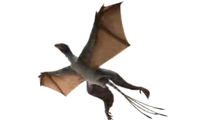Name: Yi Qi (Chinese for "strange wing"); pronounced ee-CHEE
Habitat: Woodlands of Asia
Dinosaur Facts: Late Jurassic (160 million years ago)
Size and Weight: About one foot long and one pound
Diet: Probably insects
Distinguishing Characteristics: Small size, feathers, bat-like wings
Zalmoxes

Name: Zalmoxes (named after an ancient European deity); pronounced zal-MOCK-sees
Habitat: Woodlands of central Europe
Dinosaur Facts: Late Cretaceous (70-65 million years ago)
Size and Weight: About 10 feet long and 500 pounds
Diet: Plants
Distinguishing Characteristics: Narrow beak; slightly pointed skull